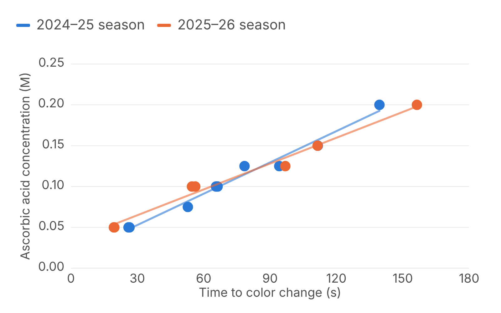
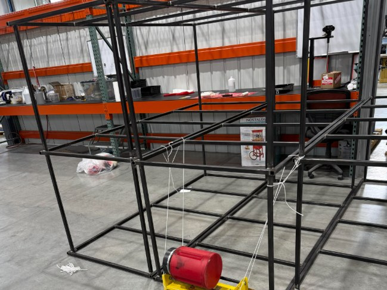

Chemical Engineering & Chemistry · Rose-Hulman Institute of Technology
Teddy Scharlotta
Junior at Rose-Hulman, double majoring in chemical engineering and chemistry. Most of my work so far has been in materials development and process design, in a shop and in a lab.
Projects

Ceramic Matrix Composite Development
Slurry formulation through sintering for an oxide ceramic composite built for service above 1000 °C in steam. These were the first ceramic parts made in-house at the company.

Iodine Clock Calibration
262 timed trials across six concentrations over two seasons, reduced to a linear calibration for the Chem-E-Car stopping mechanism.

Angled Cold-Storage Racking
Designed and welded steel racks for a prepreg freezer that hold boxes of up to about 100 lb each without narrowing the pallet aisle.
Skills
- Design of experiments and parameter studies
- Reaction kinetics and reproducibility analysis
- Composite layup, vacuum bagging, and cure
- Test plan development
- Python
- SketchUp solid modeling
- MIG welding and shop fabrication
- Excel data reduction and statistical analysis